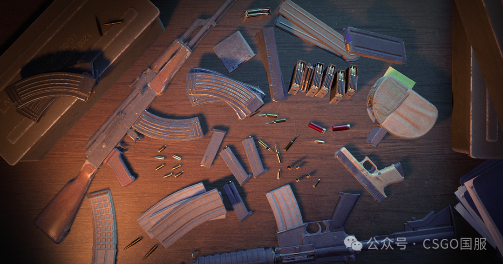
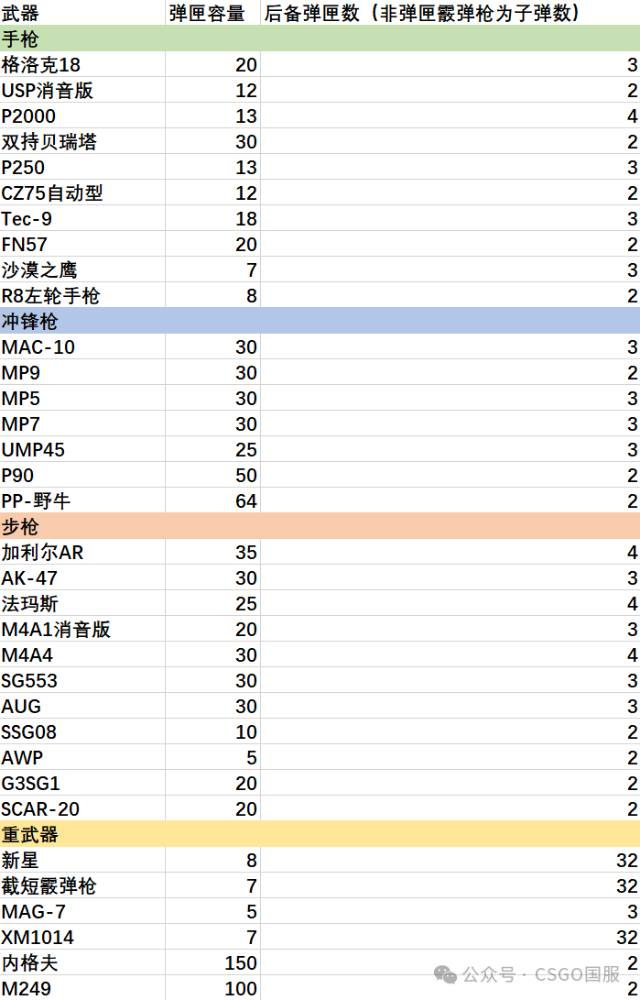
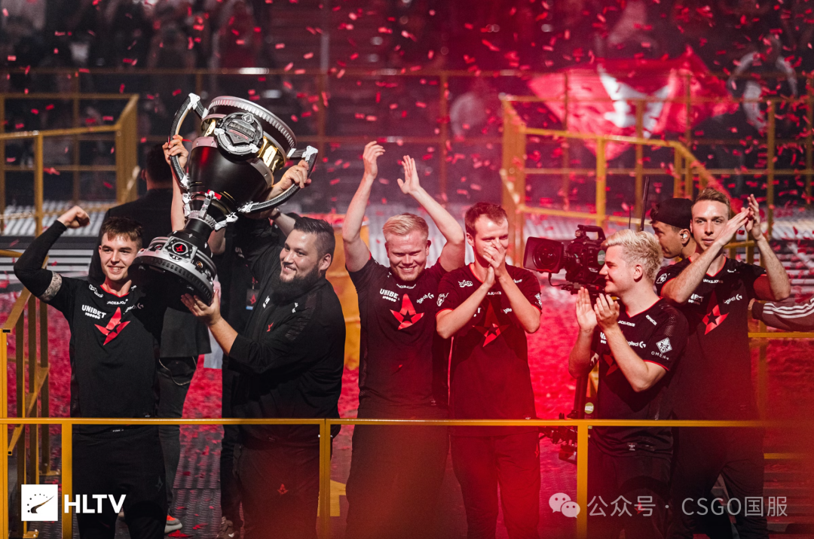
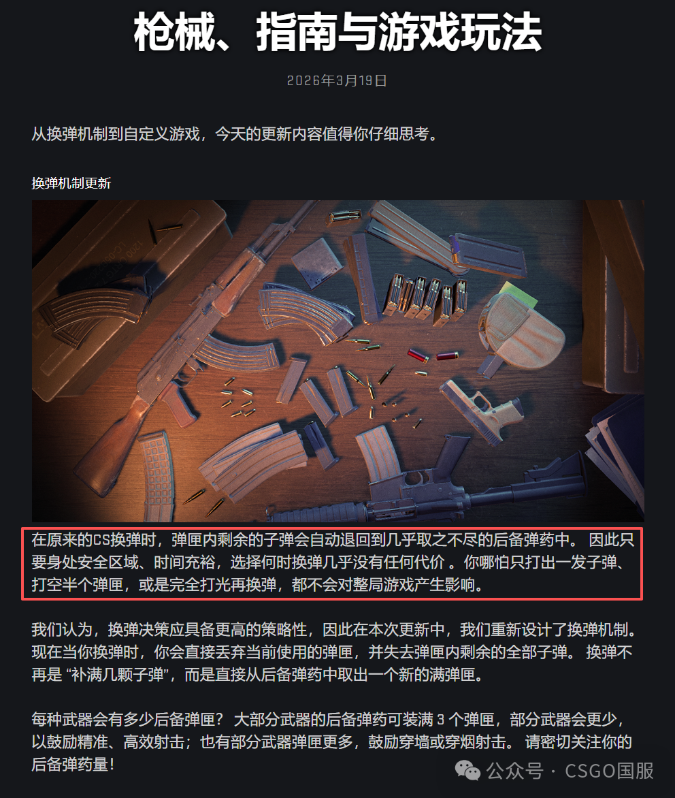
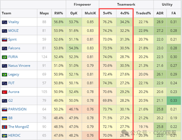

来源：https://mp.weixin.qq.com/s/Ly74iaXXdgb29Wk69cCWtw
公众号：CSGO国服
这篇文章主要在讨论 2026 年 3 月 19 日 CS 更新后，换弹机制大改会如何影响职业选手与普通玩家，以及 TYLOO 与 FaZe 的生死战背景。
星标只三步，更新不迷路
微信公众号多次改版后，目前只有设为星标的公众号才会
及时为你推送内容
3步设为星标，不错过最新游戏更新和赛事动态！
昨天CS重构了换弹机制，详见→
2026年3月19日更新：换弹机制改变，换弹癌末日！
，那么此次更新后变化有多少，对谁的影响更大呢？本期我们就来聊一聊。

更新换弹机制改变了什么
CS在更新中重构了换弹机制，简而言之，更新后换弹不再保留原来弹夹的子弹数量，原来弹夹如果
子弹有
剩余，这些子弹会被丢弃。可以说，这是继修改单独购买子弹的机制之后，换弹或者说子弹机制的最大更新。
很多玩家觉得这样修改是为了更“拟真”，但从调整后的枪械后备弹匣数量来看，
个人觉得V社更多的是从竞技或职业比赛中进行考量，

想
/
不想
让
某些枪更侧重去做某方面的事
那更新对玩家有影响吗？当然有！

此次更新将会在一定程度上改变当前游戏玩法，
而且对职业赛场/高水平玩家的影响，和对普通玩家的影响截然不同。
对职业赛场/
高水平玩家的影响
首先，这一机制最针对的毫无疑问是当前的混烟打法
，这也是几乎所有分析中都会提到的一点。混烟，或者说非接触战斗是CS中最富有技巧性的一环，而且这一环也必然随着玩家对游戏理解的加深从而占据更高的比重。非接触战斗是富有魅力的，很多玩家都会记得2019年Starladder Major中Astralis几乎仅通过投掷物就完全摧毁了AVANGAR的进攻，投掷物的运用也是非接触战斗的一环，但这种对对手造成的伤害完全建立在对对手的解读以及自身的信息收集之上，因而是绝对意义上“强”的表现。

混烟在一定程度上也是如此，它是建立在地图角度理解和对对手站位的判断之上的行动，也能够展现出一名选手或者说一支队伍的能力。但它与道具的不同之处在于，
混烟所付出的代价和收益之间完全不成正比。
简而言之，
混烟的代价太小了。
投掷物在一局中是有绝对上限的
，所以道具管理是CS中非常重要的一环；

枪械的子弹虽然也有上限，但在单次对局中，以CS的硬核程度令子弹可以说在相对状态下是几乎“无限”的
。那么，
混烟的收益就显得过高了
V社的官方BLOG中就有明确提到这一点，所以这应该才是此次更新的原因
由于CS的机制，无论CT还是T，人数的优势是巨大的，这一点我们从下图中就可见一斑。
V社此次更新，明显是不想重走早期CS的老路。在CS:GO之前，穿射几乎是CS高端局和职业赛场的必备技能，一局比赛的胜负，在很大程度上取决于T能否在进点之前穿死CT的防守队员，n0thing在Nuke的穿墙镜头很多玩家都看过。

如今CS的比赛也逐渐出现这种趋势，在前期的道具互换阶段，能否通过混烟击杀对手往往能决定这一回合的走势。当比赛都变成开局互穿后，某种程度上也会让游戏显得更“无聊”，特别是如今CS已经做出了炸烟雷等改动后，混烟依然如此强势，很明显并非是V社所乐见的。
其次，此次更新在很可能会增加第二武器的利用率，从而可以增加比赛的激烈程度，缩小各支队伍的差距。处于激烈对枪环境时，主武器和第二武器的差距是明显的。在所有人都使用主武器时，强队和弱队，强的选手和弱的选手的差距是相对固定的。比如一名二线队伍选手在和donk对枪时，10次可能只能打过3次，加上队伍的差距，这一数字可能更低。但假如donk在10次对枪中，有2到3次用第二武器进行交战，那么对枪的差距有可能会显著缩小（扩大也无所谓，反正正常打最多也赢不了3次）。那么这将增加比赛的不确定性。强者恒强，但其中的不确定性毫无疑问会增加。同时，这次更新很有可能会使得玩家在比赛中加强对第二武器的投资，第二武器可能不只在强起局和ECO局中出场，也许我们能在比赛的关键局中看到明星选手既起AK，又买Tec-9，以此来增加比赛的容错率。
再次，对比赛节奏的影响。当前一些地图，比如Inferno、Overpass、Anubis，都有节奏感很强的区域——Inferno的香蕉道、Overpass的A小，Anubis的中路等。笔者认为
这些原本会反复拉扯的区域可能在一定程度上会加快节奏，特别是CT
。是否还会打得如当前版本一样凶？CT会不会为了子弹管理选择快速退防包点？都是值得我们关注的问题。前期可能显不出来，但在回合中后段，子弹管理肯定会露出timing，特别是当子弹剩14、5发的时候，对于交火时通常处于人数劣势的CT方一定会非常难受。
未来CT不止要做道具管理，还要做子弹管理
（主要是换弹的时机）
最后，尽管此次换弹机制的变化会产生一定程度的影响，但对当前职业选手的影响还是比较有限的。因为常规登场武器除了AWP外，子弹数量在绝对意义上并没有减少，甚至M4A4等武器还有所增加。高玩和职业选手们主要是要适应这一变化。这就和当初投掷物可丢弃一样，